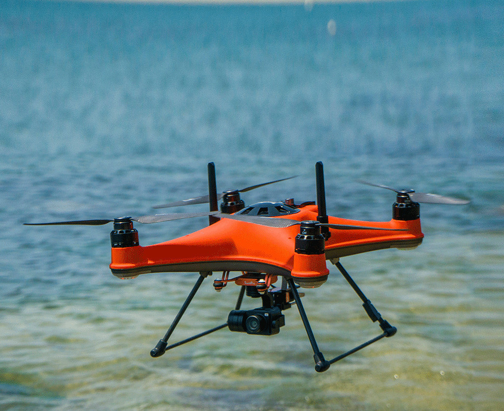

MĀKI SkyDrop
Waterproof Sampling Drone
The SkyDrop enables rapid water sampling from isolated or hazardous areas like ponds, flood zones, and sediment basins. Built on a SwellPro waterproof platform, it delivers samples to locations that are difficult or unsafe to reach by boat or on foot.